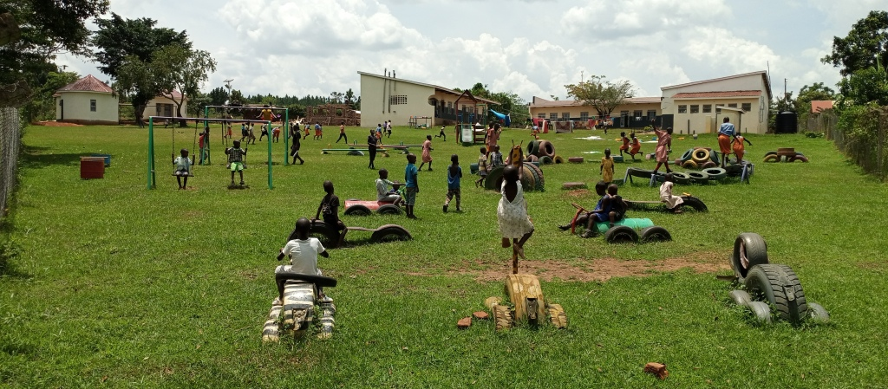
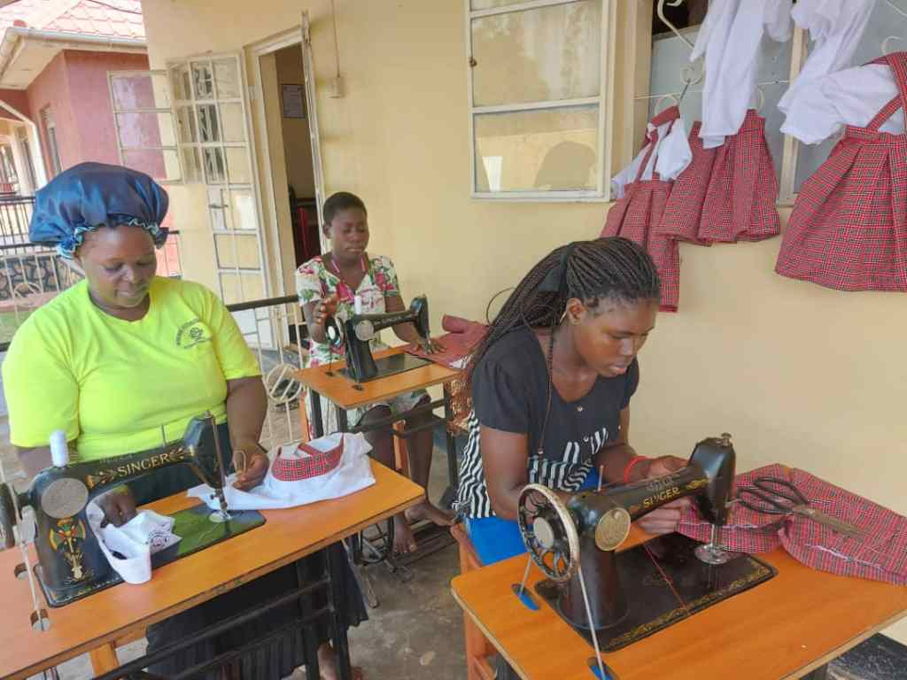
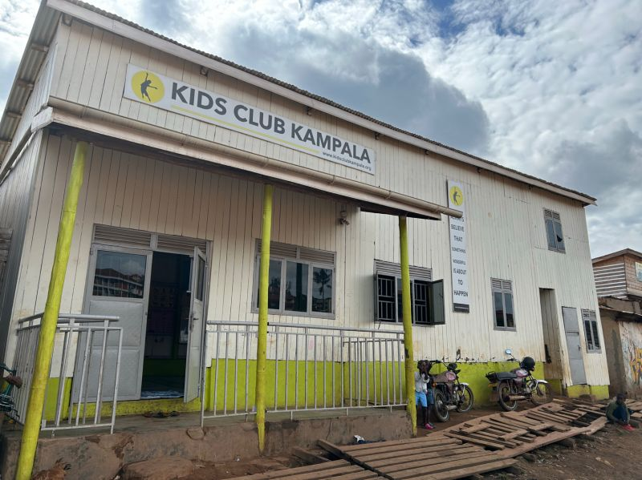
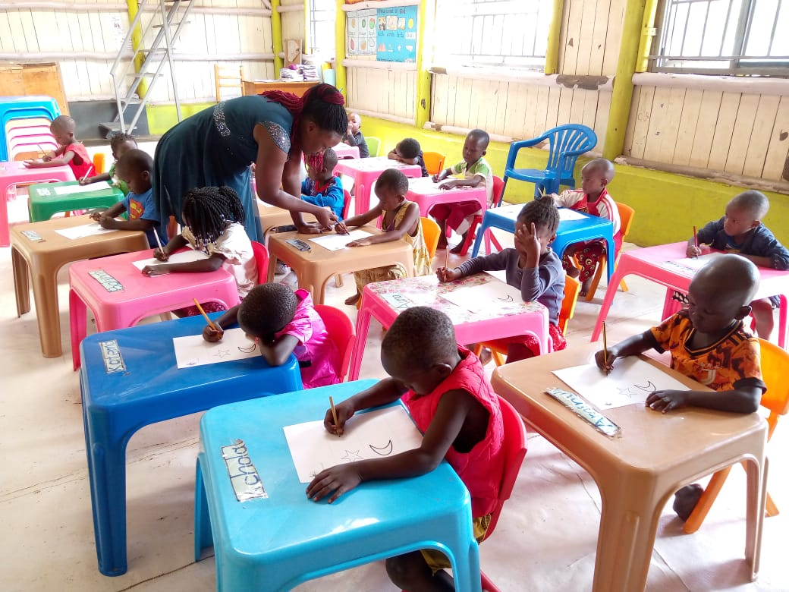

We are a lifeline to vulnerable children and currently supporting over
300,000 individuals across 10 communities in Uganda. Children and families
living in Kampala’s slums have complex needs. We provide for both their
immediate needs and strengthen their futures through feeding, protecting,
educating and skilling. Join us today in any of our current projects to
cause a greater impact ! Join us
1. EWAFE

Ewafe means ‘Where We Belong’ in Luganda.
Continue reading...
This project supports abandoned and at-risk children in
the slums of Kampala. The project offers emergency help
and a safe place to live, while also working towards
reuniting children with their relatives and reintegrating
them with loving families.
Abandoned, missing, street-connected and orphaned children
are referred to our services regularly by the police and
local authorities in Uganda. Since the COVID-19 lockdowns,
we have seen a huge increase in the number of children
being referred to the Ewafe project due to family
breakdown, abuse, neglect and abandonment caused by rising
poverty rates across Uganda. Each child who is rescued and
referred to the Ewafe Project is provided with a
rehabilitation package inclusive of medical, feeding,
clothing, counselling.
2. Family Strengthening

We run vocational training courses in tailoring, knitting,
Continue reading...
craft making, hairdressing and agriculture, alongside
providing business skills.
We help women, predominantly single mothers. to gain new
vocational skills and start their own businesses and
income generation projects, with the aim of contributing
to sustainable development in their families.
These projects not only give women much needed income and
skills, but they also help to empower them and build their
sense of confidence, pride and in general, a community.
hence breaking their cycle of poverty.
3. Child Safeguarding

According to the UNICEF Uganda-Child Protection Unit;
More than 8 million children in Uganda are considered to
be vulnerable to harm. Our projects focus on keeping
children and young people safe and protecting them from
harm.
Continue reading...
We provide safe spaces and fun activities for children to
have respite and play. In partnership with community
leaders our local volunteers and counsellors identify
vulnerable/at-risk children through our safeguarding
projects.
Abandoned, missing, street-connected and orphaned children
are referred to our services regularly by the police and
local authorities in Uganda. Since the COVID-19 lockdowns,
we have seen a huge increase in the number of children
being referred to the Ewafe project due to family
breakdown, abuse, neglect and abandonment caused by rising
poverty rates across Uganda. Each child who is rescued and
referred to the Ewafe Project is provided with a
rehabilitation package inclusive of medical, feeding,
clothing, counselling.
4. Access to Education

According to the UN, 3 out of every 4 children who enroll in
primary school
in Uganda will drop out, and only 3 out of every 5 of
those who do finish primary school will make it to
secondary school. Education is a basic human right and
vital to breaking the cycle of poverty, but it’s out of
reach for so many children.
Continue reading...
Our Early Education for All provides early childhood
learning, free for children between the age of 3 to 6
years following the national curriculum, this project runs
in 3 slum communities of Katanga, Naguru and Namuwongo.
Our education Sponsorship provides school fees and school
supplies to vulnerable children from poor communities, all
through their entire academic journey, thanks to our
children sponsors who help to make this possible.
Along side our early education for all is the Feeding
project, this enables the children to have a nutritious
meal before they go back home. our food banks are also a
source of community care packages to vulnerable
households.